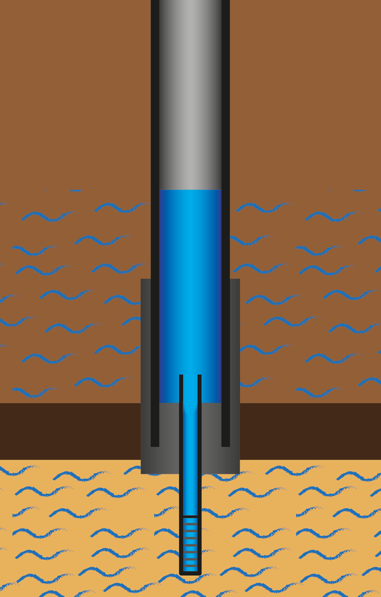

Pozo Encamisado
Técnicas y procedimientos para la construcción de pozos con revestimiento completo
¿Qué es un pozo encamisado?
Un pozo encamisado es una perforación que cuenta con revestimiento (casing) a lo largo de toda su extensión, desde la superficie hasta el fondo. Este tipo de construcción proporciona máxima protección estructural y previene la contaminación del agua subterránea.

Características principales
- Revestimiento completo: Tubería desde superficie hasta fondo del pozo
- Máxima protección: Previene derrumbes y contaminación
- Mayor durabilidad: Estructura más resistente y duradera
- Control de calidad: Mejor aislación entre diferentes acuíferos
Ventajas del pozo encamisado
Protección estructural
El revestimiento completo evita el colapso de las paredes del pozo, especialmente importante en terrenos inestables o arenosos.
Prevención de contaminación
Impide la entrada de contaminantes superficiales y separa diferentes niveles acuíferos, manteniendo la calidad del agua.
Mayor vida útil
La protección completa del pozo resulta en una mayor durabilidad y menor necesidad de mantenimiento.
Proceso constructivo
- Perforación piloto: Se realiza la perforación inicial hasta la profundidad deseada
- Ensanchamiento: Se amplía el diámetro para permitir la instalación del revestimiento
- Instalación del casing: Se coloca la tubería de revestimiento desde superficie hasta fondo
- Cementación: Se cementa el espacio anular entre el revestimiento y las paredes del pozo
- Perforación del filtro: Se perforan aberturas en el revestimiento en la zona acuífera
- Desarrollo del pozo: Se limpia y desarrolla para maximizar el caudal
Materiales utilizados
Tubería de revestimiento
- PVC: Resistente a la corrosión, económico
- Acero inoxidable: Máxima durabilidad, resistente a condiciones extremas
- Hierro galvanizado: Buena resistencia, costo intermedio
Cemento
Se utiliza cemento especial para pozos que fragua bajo el agua y proporciona sellado hermético.
Aplicaciones recomendadas
- Terrenos inestables o con presencia de arenas sueltas
- Zonas con riesgo de contaminación superficial
- Pozos de gran profundidad
- Abastecimiento de agua potable para consumo humano
- Instalaciones industriales con altos estándares de calidad
Consideraciones técnicas
Diámetro del revestimiento
Debe ser adecuado para el caudal requerido y permitir la instalación de la bomba sumergible.
Profundidad de cementación
La cementación debe extenderse desde superficie hasta al menos 20 metros de profundidad para asegurar el sellado sanitario.
Diseño del filtro
Las aberturas en el revestimiento deben calcularse según las características del acuífero para optimizar el ingreso de agua.
Mantenimiento
- Inspección periódica del cabezal del pozo
- Verificación del estado del revestimiento
- Limpieza del filtro cuando sea necesario
- Análisis de calidad del agua regularmente
- Mantenimiento del equipo de bombeo